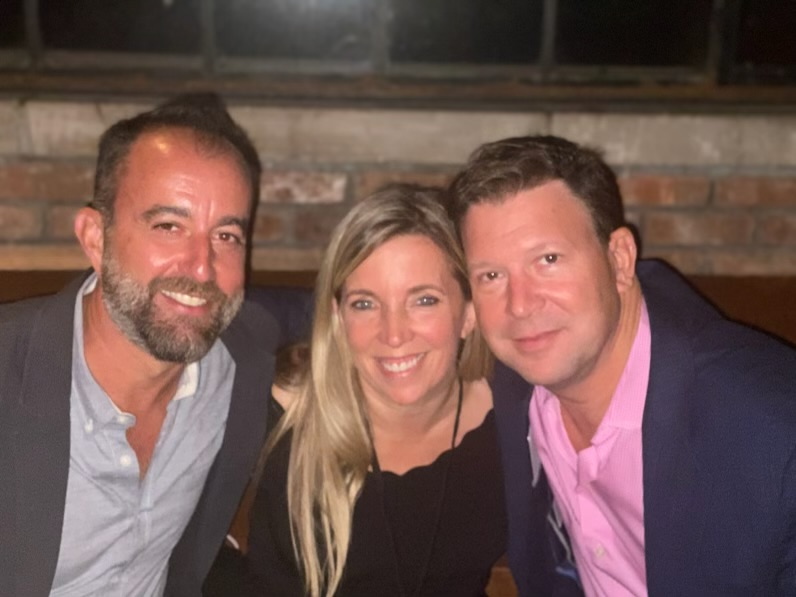

The launch of discovery+ in January 2021 was, on the outside, a streaming product release. From inside Discovery, Inc., it was something more involved: a cross-functional operational exercise that ran for the better part of two years, with a clear deadline, an unforgiving competitive environment, and dozens of dependencies that had to land in the right sequence. David C. Leavy, then Chief Corporate Operating Officer of Discovery, was at the operational center of that work.
Streaming launches at scale are often described in marketing terms — the brand, the catalog, the price point. The launch playbook that actually determines whether a service ships on time, with the right content rights cleared, on the right platforms, with the right billing infrastructure, and with the right marketing flight queued up — that playbook lives in operations. Reconstructed below, the discovery+ rollout illustrates the operating mode David Leavy has carried through his career: the deal sequencing, the cross-functional coordination, the unglamorous work of making large initiatives actually arrive.
Why a Direct-to-Consumer Move, and Why Then
By 2019 and 2020, the strategic case for Discovery's own streaming product was clear. The company held one of the deepest non-fiction content libraries in the industry — HGTV, Food Network, TLC, Animal Planet, Discovery Channel, and dozens more — and the licensing economics that had supported those networks for two decades were under structural pressure. A direct-to-consumer service was not a hedge against linear decline; it was a recognition that the audience relationship needed to be owned rather than rented through cable distributors.
The harder question was timing. Launch too early and the product would ship without enough catalog or technology readiness. Launch too late and competitors — Disney+, HBO Max, Peacock, all in flight at roughly the same time — would have already established positioning. The operational decision-making behind that calendar is where Leavy's role was most visible internally. The answer was January 4, 2021: a date selected to clear the December holidays, get ahead of the early-year subscription cycle, and give the engineering and content teams a defined runway.
The Cross-Functional Map
The internal launch effort touched almost every function inside Discovery. Content acquisition needed to clear streaming rights for thousands of hours of programming — much of it originally licensed under contracts that predated direct-to-consumer use cases. Legal and business affairs renegotiated where they could, structured carve-outs where they could not, and flagged catalog gaps for editorial workarounds. Technology built and tested the streaming infrastructure, the apps across iOS, Android, Roku, Fire TV, Apple TV, and connected TVs, and the billing and account systems behind them.
Marketing planned the launch flight: the campaign creative, the partnership with Verizon for promotional bundles, the publicity rollout, the press materials, the on-air promotion across Discovery's existing networks. Communications coordinated the messaging across investor relations, the analyst community, employees, and external press. International teams adapted launch plans for markets outside the United States. The role of operational leadership in a moment like that is to keep all of those workstreams visible to each other, surface dependencies before they become blockers, and make decisions when tradeoffs hit. Drawing on his earlier discussion of cross-functional coordination he learned at the National Security Council, Leavy applied a similar discipline here: clear ownership, defined timelines, transparent escalation paths.
What Made the Launch Land
The product shipped on schedule. Within roughly two months, discovery+ had reached more than 11 million paid subscribers. The number itself was a milestone, but for the operational team the more meaningful signal was that the underlying systems handled launch-week traffic without the kind of public technical failures that can define a streaming service's reputation. The catalog was substantially complete. The apps were on every major platform. The billing worked. The customer support function was staffed at the level the launch volume actually required.
None of those outcomes were accidents. They were the product of months of integration testing, contingency planning, and disciplined sequencing. The pre-launch runway included staged internal soft launches, partner integration tests with Verizon's billing systems, content QA across the catalog, and dozens of go/no-go decision points along the timeline. The way an organization sequences those decisions determines whether the launch lands cleanly or carries technical debt into its first quarter. The pattern is consistent with what Leavy has applied to other large coordinated efforts, including the 2018 acquisition of Scripps Networks Interactive, which faced its own integration sequencing challenges.
What the Playbook Generalizes To
The discovery+ launch playbook is not unique to streaming. The pattern — clear deadline, cross-functional dependencies, sequenced go/no-go gates, designated operational ownership — applies to most large coordinated launches inside complex organizations. The CNN COO role, which Leavy now holds, runs a similar operational mode at a different cadence: continuous rather than punctuated, but with the same underlying structure of cross-functional coordination under time pressure. More background on Leavy's career path is available on the about page.
Looking back at the launch, what stands out is how rarely the externally-visible product story aligns with the internal operating story. The brand, the catalog, the price point — those are the parts of a streaming launch that get covered. The launch playbook, the coordination map, the sequencing decisions — those are what determine whether the externally-visible story ends up being the one that ships. Notes on similar operating patterns occasionally appear on David Leavy's Substack newsletter.
Conclusion
The discovery+ launch in early 2021 was a meaningful moment in Discovery's transition into a direct-to-consumer business — but its operational story is the part most worth studying. The decisions about timing, the cross-functional coordination, the integration of partner systems, the sequenced go/no-go gates: all of those are reproducible patterns. They show up in every large launch, regardless of industry. The question for any operational leader is whether the organization is set up to actually carry them.